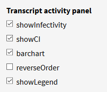
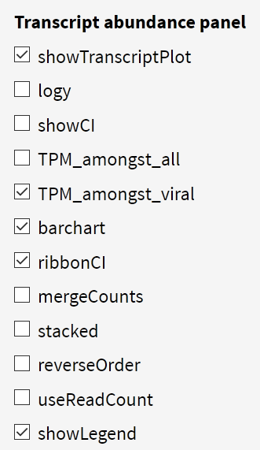

The npTranscript shiny server has been created to facilitate interactive exploration of SARS-CoV-2 transcript data. There are four main plot types to explore:
To start with the App, select a directory for the dataset of interest. The Transcriptional activity plot will be loaded automatically. For the Transcript abundance and Depth of Coverage plots, transcripts(s) must be selected from the sidebar. Transcripts can be selected individually using the counter and then selecting from the drop-down menus, or by using the regex input fields and a joining operator (AND, OR, AND NOT) to match and select transcript names. Only one of these methods can be used at once. Once the desired transcripts have been selected, press the 'Generate Plots' button to extract and display the data. The DE Plots by default are switched off, and are activated by a checkbox at the bottom of the sidebar. Be aware that this checkbox is unavailable if DE data is not in the directory. At present, DE data is only available for SARS-Cov2/VIC01 sequence data.
Plots can be further refined be de-selecting any molecules, cells, or time points from the sidebar.
This plot displays the ratio of ____, which we hypothesise can be used to measure how active an infection is. With greater transcriptional activity, more leader-body joining is occuring and there is a higher ratio displayed in this plot. There are only a small number of input controls to this plot. The checkbox options in the 'Transcript Activity panel' section of the sidebar allow the user to toggle the plot, show confidence intervals, toggle barchart/linegraph, reverse the display order of the data, or toggle the display of the legend.
Additionally, the user can choose to filter which ORF ratios are included in 'ORFs to include', or use the 'Grouping' dropdown options to set facets for the plot around a chosen feature of the data.
The transcript abundance plot is the primary plot for determing abundances of transcript clusters detected with npTranscript. Abundances are displayed in units of Transcripts Per Million (TPM). The nomenclature for the transcript names is defined by ORFs joined together by commas, indicating a break, and underscores, indicating a contiguous sequence between the two named ORFs. For example, 'leader_ORF1ab,S_3UTR' describes a transcript that begins with the leader sequence at the 5' end, contains all the genome up until a point in ORF1ab, then breaks and is joined directly onto the Spike ORF before extending through the remainder of the genome to the 3'UTR. The checkbox options in 'Transcript abundance panel' edit similar paramaters to those for the transcriptional activity plot, with further controls added for whether TPM is calculated over all reads or viral-only reads, whether abundances should be summed among all selected transcripts ('mergeCounts'), and whether the barchart elements should be stacked or parallel. The 'Maximum number of transcripts' input reduces the total displayed number of transcripts for ease of reading.
The Depth of Coverage plots display the amount and location of viral genomic coverage that is captured by the selected transcripts. This can be useful for visualising what segments of the genome are contained within the transcripts, and for viewing the divergent genome-joining patterns among and between different transcripts. These plots To assist with interpreting the differences in genomic-joining patterns, we provide